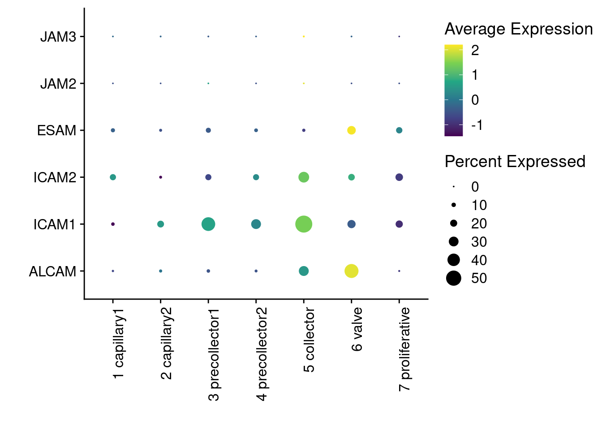
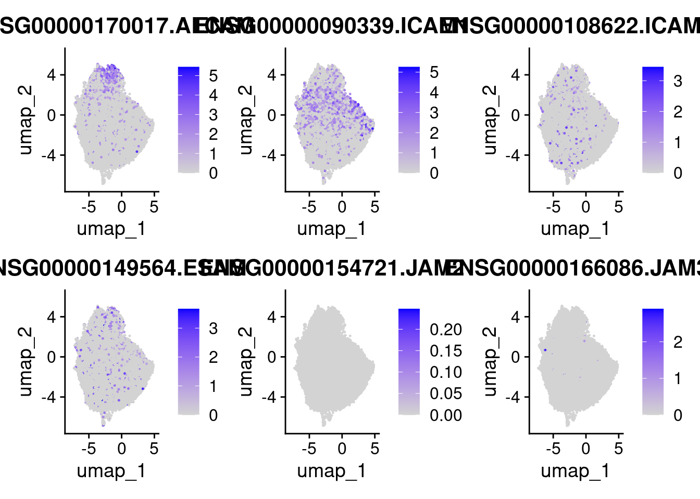
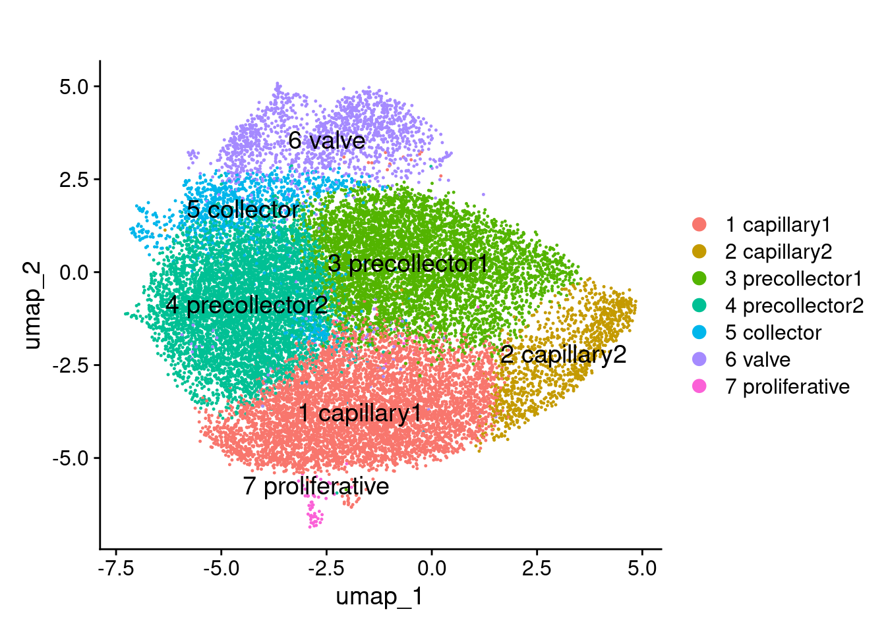
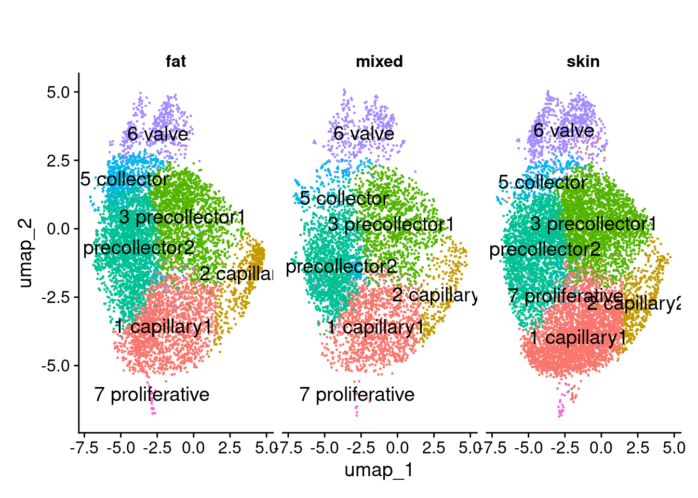
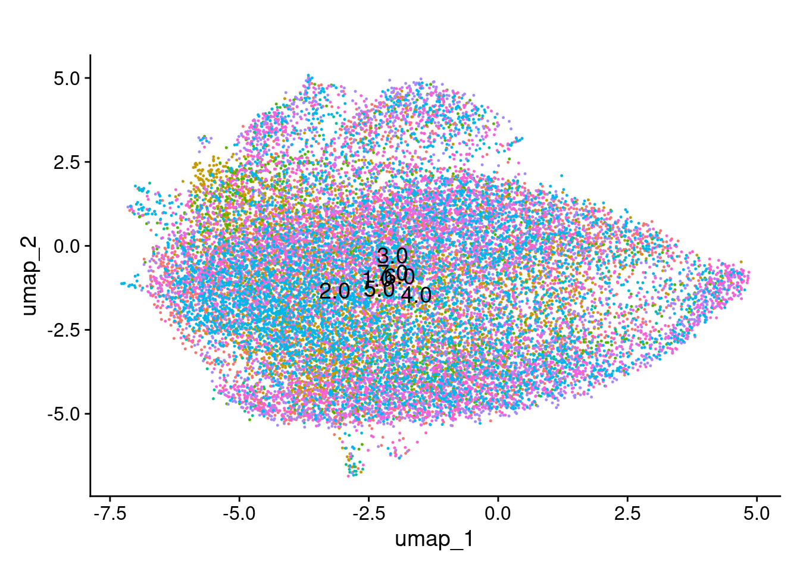
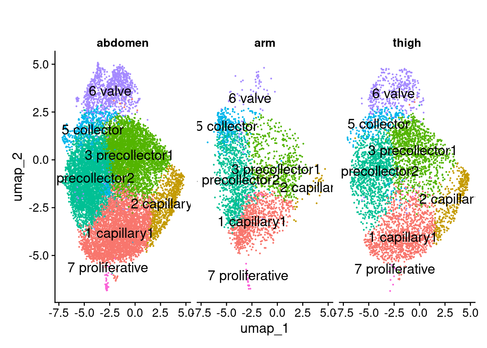
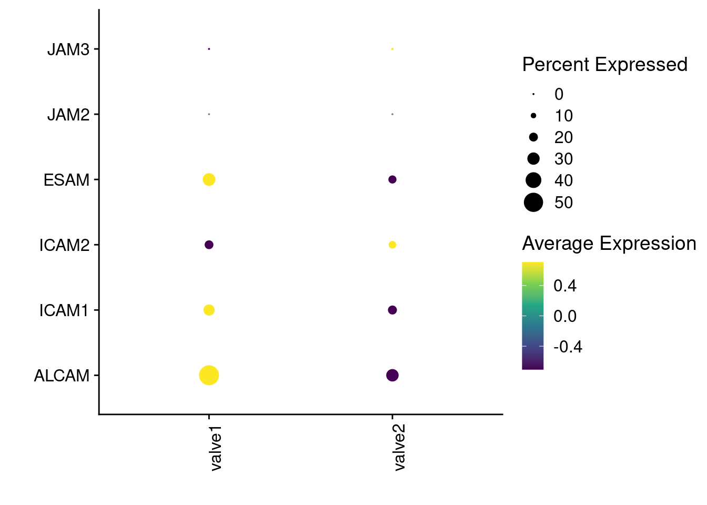

library(Seurat)
library(patchwork)
library(dplyr)
library(dplyr)
library(tidyr)
library(viridis)
library(ggplot2)
library(zellkonverter)
library(SingleCellExperiment)
library(ShinyCell)
library(Seurat)bubble_plot
Data viz with seurat
A basic script to generate some basic Seurat plots with the preprocessed data
Preamble
Data
# TO ADAPT: change this to the absolut path at your pc, e.g.:
# seurat <- readRDS("/home/aline/lec_flow/data/seurat.rds)
seurat <- readRDS(file.path("..", "data", "seurat_all_metadata_genes.rds"))
Idents(seurat) <- seurat$cell_type_name
# Adapt to genes of interest
genes <- c("ALCAM","ICAM1","ICAM2","ESAM","JAM1","JAM2","JAM3")Visualizations
selGenesDat <- data.frame(gene=genes)
genes <- data.frame(ensID=rownames(seurat)) |>
mutate(gene=gsub("^.*\\.", "", ensID))
selGenes <- selGenesDat %>%
left_join(., genes, by="gene")
DotPlot(seurat, assay="originalexp", features = selGenes$ensID, scale =T) +
scale_color_viridis_c() +
coord_flip() +
theme(axis.text.x = element_text(angle = 90, hjust = 1)) +
scale_x_discrete(breaks=selGenes$ensID, labels=selGenes$gene) +
xlab("") + ylab("")Warning: The following requested variables were not found: NAScale for colour is already present.
Adding another scale for colour, which will replace the existing scale.
Visualizations violin plot
vln_list <- VlnPlot(object = seurat, features = selGenes$ensID, ncol = 3, add.noise = F)Warning: The following requested variables were not found: NAvln_list <- lapply(1:length(vln_list), function(index){
vln_list[[index]] + ggtitle(selGenes$gene[index])
})
vln_list[[1]]
[[2]]
[[3]]
[[4]]
[[5]]
[[6]]
wrap_plots(vln_list, nrow = 2)
Visualizations dimplot
FeaturePlot(object = seurat, reduction = "umap", features = selGenes$ensID, ncol = 3)Warning: The following requested variables were not found: NA
Visualizations UMAP clusters
DimPlot(seurat, reduction = "umap", label = T, label.size = 5) +
ggtitle("")
DimPlot(seurat, group.by = "ident", split.by = "tissue", reduction = "umap", label = T, label.size = 5) +
ggtitle("") +
theme(legend.position = "none")
DimPlot(seurat, group.by = "donor", reduction = "umap", label = T, label.size = 5) +
ggtitle("") +
theme(legend.position = "none")
DimPlot(seurat, group.by = "ident", split.by = "tissue_origin", reduction = "umap", label = T, label.size = 5) +
ggtitle("") +
theme(legend.position = "none")
Subset valve groups
valve <- subset(seurat, subset = logcounts.scaled.pca.harmony.neighbors_connectivities.leiden_1res %in% c("8", "9"))
valve$valve_cluster <- valve$logcounts.scaled.pca.harmony.neighbors_connectivities.leiden_1res |> droplevels()
levels(valve$valve_cluster) <- c("valve1", "valve2")
Idents(valve) <- valve$valve_clusterDotPlot(valve, assay="originalexp", features = selGenes$ensID, scale =T) +
scale_color_viridis_c() +
coord_flip() +
theme(axis.text.x = element_text(angle = 90, hjust = 1)) +
scale_x_discrete(breaks=selGenes$ensID, labels=selGenes$gene) +
xlab("") + ylab("")Warning: The following requested variables were not found: NAWarning: Scaling data with a low number of groups may produce misleading
resultsScale for colour is already present.
Adding another scale for colour, which will replace the existing scale.